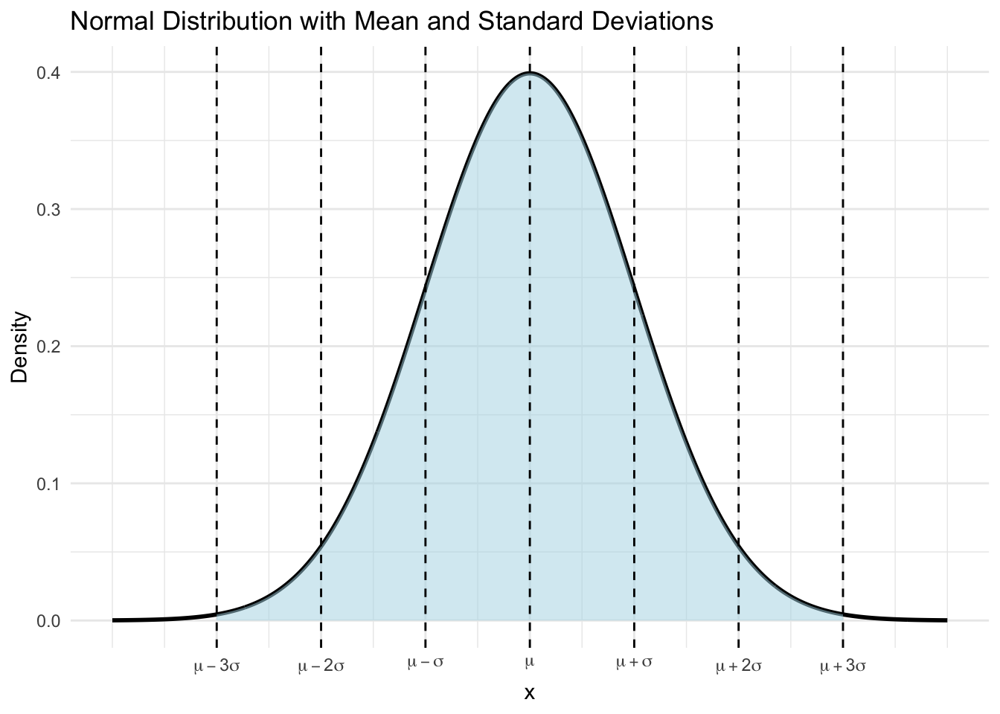
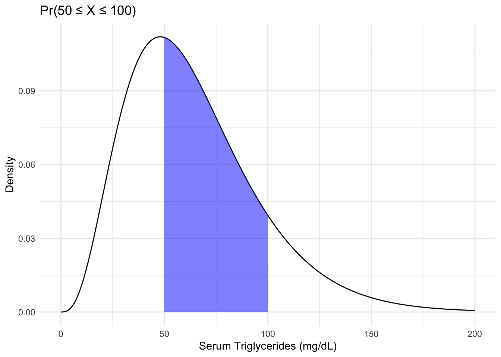
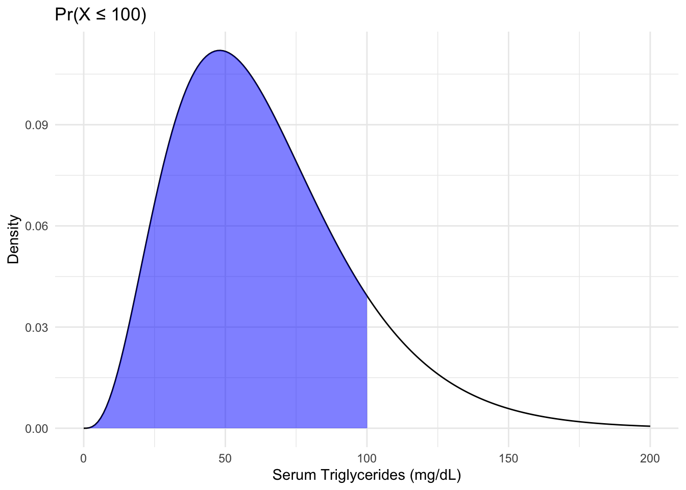
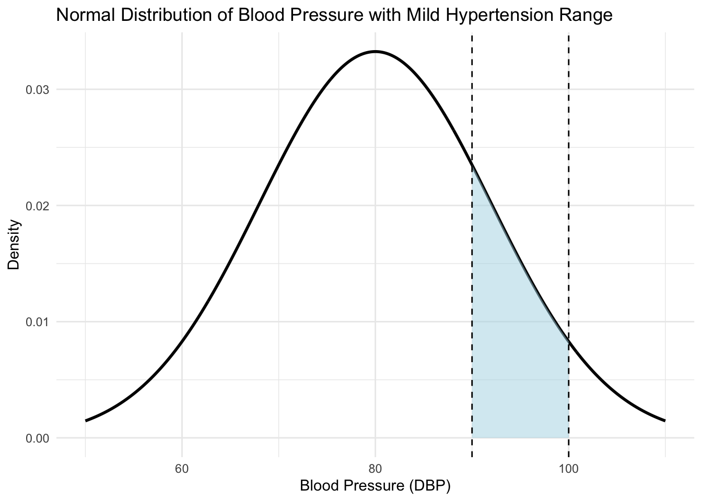
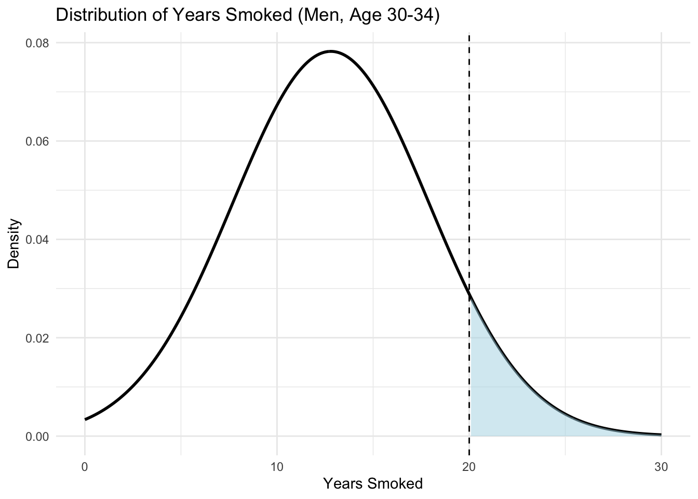
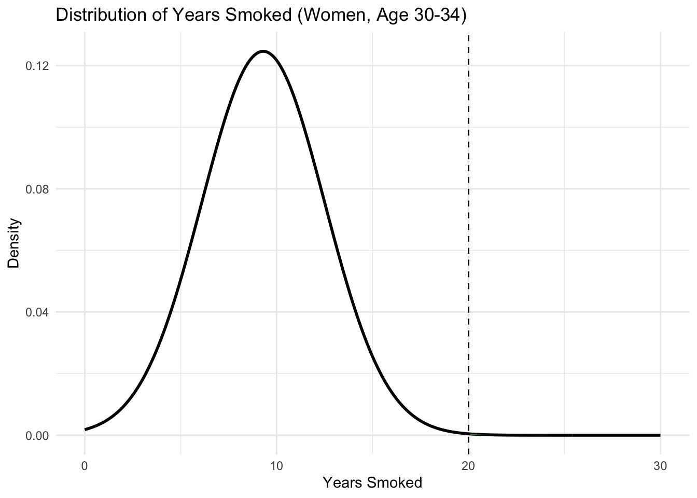

Chapter 5 Notes: Continuous Distributions
A continuous random variable “takes on decimal values.”
For such random variables, the probability at any specific value is \(0\).
Example:
- \(P(\text{a man is exactly 6'2.35792471613"}) \approx 0\)?
- \(P(\text{a man is exactly 6'2"}) \approx 0\)
- Men are a little above or a little below.
However, we know some regions are more likely than others.
- \(P(5' \leq X \leq 7') > P(0' \leq X \leq 1')\)
We describe this intuition with a PDF (Probability Density Function).
A Probability Density Function of a random variable \(X\) is a function, \(f\), where:
- \(P(a \leq X \leq b) = \text{area below curve between } a \text{ and } b\)
The CDF (Cumulative Distribution Function) is again the \(F(x) = P(X \leq x)\).
Example: Let \(X = \text{Serum triglyceride level}\)
::: {.cell} ::: {.cell-output-display}  ::: :::
::: {.cell} ::: {.cell-output-display}  ::: :::
Expected value, \(\mu\), the average \(X\) over many trials:
- \(\mu = \int_{-\infty}^{\infty} x f(x) \, dx \quad \text{where } f(x) = \text{density}\)
Variance: Average squared distance
- \(\sigma^2 = E\left((X - \mu)^2\right) = E(X^2) - \mu^2\)
- \(\sigma^2 = \int_{-\infty}^{\infty} (x - \mu)^2 f(x) \, dx\)
Most common continuous distribution: Normal distribution
\(f(x) = \frac{1}{\sqrt{2 \pi \sigma^2}} \exp\left(-\frac{1}{2} \frac{(x - \mu)^2}{\sigma^2}\right) \quad \text{if } X \sim N(\mu, \sigma^2)\)
Function of \(\sigma^2\) (variance) at \(\mu\) (mean)
Also, if \(X \sim N(\mu, \sigma^2)\), then \(E(X) = \mu\), \(Var(X) = \sigma^2\)
Normal distribution curve:
- A typical bell-shaped curve centered at \(\mu\)
The standard normal distribution is \(N(0, 1)\).
Properties:
- 68-95-99.7 rule:
- 68% of area within \(\pm 1\sigma\)
- 95% of area within \(\pm 2\sigma\)
- 99.7% of area within \(\pm 3\sigma\)
- Symmetric: \(f(\mu - x) = f(\mu + x)\)
- Mean = median = \(\mu\)
- If \(X \sim N(\mu, \sigma^2)\), then \(Z = \frac{X - \mu}{\sigma} \Rightarrow Z \sim N(0, 1)\)
- If \(X \sim N(\mu_1, \sigma_1^2)\) and \(Y \sim N(\mu_2, \sigma_2^2)\), then \(Z = X + Y\) is also normally distributed:
- \(Z \sim N(\mu_1 + \mu_2, \sigma_1^2 + \sigma_2^2)\)
- 68-95-99.7 rule:
We denote the PDF of the standard normal by \(\phi(x)\).
The CDF is \(\Phi(x) = P(X \leq x)\).
Example: Blood Pressure is \(N(80, 144)\)
Mild hypertension is \(90 \leq DBP \leq 100\)
During a random day, what is \(P(\text{mild hypertensive})\)?
Solution:
\(P(90 \leq X \leq 100)\)
\(= P(X \leq 100) - P(X \leq 90)\)
\(= \text{pnorm}(100, \text{mean} = 80, \text{sd} = \sqrt{144}) - \text{pnorm}(90, \text{mean} = 80, \text{sd} = \sqrt{144})\)
\(\approx 0.1545\)
XYZ Finish this figure:

Example: Tree diameter \(\sim N(8, 2^2)\) (in inches)
- What is the probability that a tree has a diameter > 12 inches?
- Solution: \(1 - \text{pnorm}(12, 8, 2) \approx 0.02275\)
If \(X_1, \dots, X_n\) are random variables and \[ L = \sum_{i=1}^n c_i X_i \] for \(c_i\) constants (not random variables), then
- \(E(L) = \sum_{i=1}^n c_i E(X_i)\)
- \(\text{Var}(L) = \sum_{i=1}^n c_i^2 \text{Var}(X_i)\)
If the \(X_i\) are also normally distributed, then \(L \sim N(E(L), \text{Var}(L))\)
Example:
\(X =\) serum creatinine level for Caucasian individual
\(Y =\) serum creatinine level for Black individual
\(X \sim N(1.3, 0.25)\)
\(Y \sim N(1.5, 0.25)\)
What is the distribution of the average level for one Caucasian and one Black individual chosen at random?
Let \(Z = \frac{1}{2} X + \frac{1}{2} Y\)
Then \(Z \sim N(1.4, 0.125)\)
Calculations:
- \(E(Z) = \frac{1}{2}(1.3) + \frac{1}{2}(1.5) = 1.4\)
- \(\text{Var}(Z) = \frac{1}{4}(0.25) + \frac{1}{4}(0.25) = 0.125\)
Normal Approximation to Binomial (rule of thumb):
- If \(X \sim \text{Bin}(n, p)\) and \(np(1 - p) \geq 5\), then \(X \approx N(np, np(1 - p))\)
Let \(X \sim \text{Bin}(n, p)\), \(Y \sim N(np, np(1 - p))\).
- Then \(P(a \leq X \leq b) \approx P\left(a - \frac{1}{2} \leq X \leq b + \frac{1}{2}\right)\) (continuity correction).
We will use this for 2-sample binomial tests.
Why? Let \(T_1, T_2, \dots, T_n\) be \(n\) independent Bernoulli trials.
- \(T_i = \begin{cases} 1 & \text{with probability } p \\ 0 & \text{with probability } 1 - p \end{cases}\)
- \(X = T_1 + T_2 + \dots + T_n = \sum_{i=1}^n T_i\)
Central Limit Theorem says normal for large \(n\).
Normal Approximation to Poisson:
- If \(X \sim \text{Pois}(\mu)\), then \(Y \sim N(\mu, \mu)\).
- Rule of thumb: For \(\mu \geq 10\), \(P(a \leq X \leq b) \approx P(a - 1 \leq Y \leq b + 1)\)
Exercise 5.12 – 5.13 of Rosner:
Of men 30-34 who have smoked:
- $X = $ # years a man has smoked
- $Y = $ # of years smoked by women in age group
- \(X \sim N(12.8, 5.1^2)\)
- \(Y \sim N(9.3, 3.2^2)\)
Q1: What proportion of men have smoked for more than 20 years? Women?
- Men: \(1 - \text{pnorm}(20, \text{mean} = 12.8, \text{sd} = 5.1) \approx 0.0794\)

- Women: \(1 - \text{pnorm}(20, \text{mean} = 9.3, \text{sd} = 3.2) \approx 0.0041\)

Exercise 5.12 – 5.13:
The Christmas Bird Count is a holiday tradition in a boring part of Massachusetts.
Data:
- Year and Number of Birds (\(x_i\)):
- 2006: 76
- 2007: 47
- 2008: 63
- 2009: 53
- 2010: 62
- 2011: 69
- 2012: 62
- \(\sum x_i = 432\)
- \(\sum x_i^2 = 27,717\)
- Year and Number of Birds (\(x_i\)):
Questions:
- What is the mean number of birds?
- \[ \bar{x} = \frac{\sum x_i}{n} = \frac{432}{7} \approx 61.71 \]
- What is the standard deviation?
- Calculate the variance: \[ \text{Variance} = \frac{\sum x_i^2}{n} - \left(\frac{\sum x_i}{n}\right)^2 \] \[ = \frac{27,717}{7} - \left(\frac{432}{7}\right)^2 \] \[ \approx 78.78 \]
- Standard deviation: \[ \text{SD} = \sqrt{\text{Variance}} = \sqrt{78.78} \approx 8.876 \]
- Suppose the number of birds is normally distributed with the same mean and SD as parts 1 and 2. What is the probability of at least 60 birds? Apply the continuity correction.
- \[ 1 - \text{pnorm}(59.5, \text{mean} = 61.71, \text{sd} = 8.876) \]
- \[ \approx 0.5983 \]
- Find the “normal range” \((L, U)\) (integers) such that:
- \(L\) = 15th percentile
- \(U\) = 85th percentile
- \[ \text{qnorm}(c(0.15, 0.85), \text{mean} = 61.71, \text{sd} = 8.876) \]
- \[ \approx (52.51, 70.91) \]
- Thus, 52 to 70 is the “normal range.”
- What is the probability of having a count \(\geq U\) at least once during a 10-year period?
\[ P(X \geq U) \approx 1 - \text{pnorm}(79.5, \text{mean} = 61.71, \text{sd} = 8.876) \]
\[ \approx 0.02252 \]
Let $Y = $ # of years \(\geq U \sim \text{Bin}(10, 0.02252)\).
\[ P(Y \geq 1) = 1 - P(Y = 0) = 1 - \text{dbinom}(0, 10, 0.02252) \]
\[ \approx 0.2037 \]
- What is the mean number of birds?